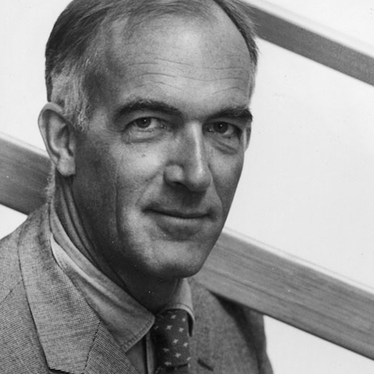
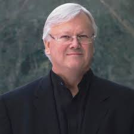

MONUMENTS I VISITED

Planning began in the late 1940s, when Eugene Goossens, the Director of the NSW State Conservatorium of Music, lobbied for a suitable venue for large theatrical productions. The normal venue for such productions, the
Sydney Town Hall, was not considered large enough. By 1954, Goossens succeeded in gaining the support of NSW Premier Joseph Cahill, who called for designs for a dedicated opera house. It was also Goossens who insisted
that Bennelong Point be the site: Cahill had wanted it to be on or near Wynyard Railway Station in the northwest of the CBD.
An international design competition was launched by Cahill on 13 September 1955 and received 233 entries, representing architects from 32 countries. The criteria specified a large hall seating 3,000 and a small hall
for 1,200 people, each to be designed for different uses, including full-scale operas, orchestral and choral concerts, mass meetings, lectures, ballet performances, and other presentations.
The winner, announced in 1957, was Jørn Utzon, a Danish architect. According to legend the Utzon design was rescued by noted Finnish-American architect Eero Saarinen from a final cut of 30 "rejects". The runner-up
was a Philadelphia-based team assembled by Robert Geddes and George Qualls, both teaching at the University of Pennsylvania School of Design. They brought together a band of Penn faculty and friends from Philadelphia
architectural offices, including Melvin Brecher, Warren Cunningham, Joseph Marzella, Walter Wiseman, and Leon Loschetter. Geddes, Brecher, Qualls, and Cunningham went on to found the firm GBQC Architects. The grand prize
was 5,000 Australian pounds. Utzon visited Sydney in 1957 to help supervise the project. His office moved to Palm Beach, Sydney in February 1963.
The Sydney Opera House in Sydney, New South Wales, Australia, is one of the most distinctive and famous 20th-century buildings, and one of the most famous performing arts venues in the world. Situated on Bennelong
Point in Sydney Harbour, with parkland to its south and close to the enormous Sydney Harbour Bridge, the building and its surroundings form an iconic Australian image. To some the spherical-sectioned shells remind them
of the flotilla of sailboats commonly cruising there. Tourists, most with no interest in opera, throng to the building in their thousands purely to see it.
The Opera House provides 45,000 square metres (11 acres) of usable office space out of 18,000 square metres (4.5 acres) of land. It is 183 metres (600 feet) tall and about 120 metres (388 feet) wide at its widest
point. It is supported on 580 concrete piers sunk up to 25 metres below sea level. Its power supply is equivalent for a town of 25,000 people. The power is distributed by 645 kilometres of electrical cable. It has about
1000 rooms. It has five theatres, five rehearsal studios, two main halls, four restaurants, six bars and numerous souvenir shops.
The opera house's roof is constructed of 1,056,000 glazed white granite tiles imported from Sweden. Despite their self-cleaning nature, they are still subject to maintenance and replacement. Its interior is composed
of pink granite mined from Tarana, NSW and white birch and brush box plywood supplied from northern NSW.
| Creators | Images | Click here to know more about him/her/them |
|---|---|---|
| Jørn Utzon |  |
https://en.wikipedia.org/wiki/J%C3%B8rn_Utzon |

Construction began on 6 January 2004, with the exterior of the structure completed on 1 October 2009. The building officially opened on 4 January 2010 and is part of the 2 km2 (490-acre) Downtown Dubai development at the 'First Interchange' along Sheikh Zayed Road, near Dubai's main business district. The tower's architecture and engineering were performed by Skidmore, Owings & Merrill of Chicago, with Adrian Smith as chief architect, and Bill Baker as chief structural engineer. The primary contractor was Samsung C&T of South Korea.
It is the tallest existing structure in the world currently. This is one of main features I liked about the monument.The Burj Khalifa is highly compartmentalised. Pressurized, air-conditioned refuge floors are located
every 13 floors (in floors G, 13, 26, 39, 52 etc.) where people can shelter on their long walk down to safety in case of an emergency or fire.Special mixes of concrete were made to withstand the extreme pressures of the
massive building weight; as is typical with reinforced concrete construction, each batch of concrete was tested to ensure it could withstand certain pressures. CTLGroup, working for Skidmore, Owings and Merrill, conducted
the creep and shrinkage testing critical for the structural analysis of the building.
The consistency of the concrete used in the project was essential. It was difficult to create a concrete that could withstand both the thousands of tonnes bearing down on it and Persian Gulf temperatures that can
reach 50 °C (122 °F). To combat this problem, the concrete was not poured during the day. Instead, during the summer months, ice was added to the mixture and it was poured at night when the air was cooler and the humidity
was higher. Cooler concrete cures more evenly and is therefore less likely to set too quickly and crack. Any significant cracks could have put the entire project in jeopardy.
| Creators | Images | Click here to know more about him |
|---|---|---|
| Adrian Smith |  |
@VANSH AGGARWAL